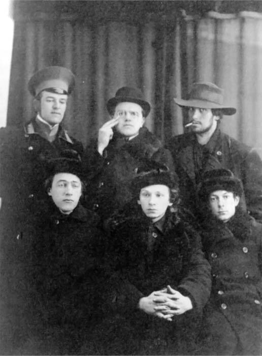

Непредсказуемое прошлое
Владимира Владимировича
Среди выдающихся соотечественников можно припомнить несколько знаменитых Владимиров Владимировичей, не затрагивая нынешнего российского лидера: В.В. Позднер, В.В. Набоков… Ну, а с тематикой данного веб-ресурса связано, конечно же, имя Владимира Владимировича Маяковского.
Читатели, которым довелось ходить в советскую школу, знают его в первую очередь как поэта, воспевшего большевистскую революцию и героическое начало построения первого в мире социалистического государства. Найдется, наверно, и немало знатоков литературы, знакомых с ранним поэтическим творчеством Маяковского. Его юношеские стихи пронизаны щемящим чувством непонятости, любовной неудовлетворенностью, запредельным индивидуализмом, протестом против мещанского быта.
Дорога «агитатора, горлана, главаря», как он сам себя называл, к большевизму была довольно извилистой. Молодому Маяковскому, несмотря на ненависть к «жирным» была очень даже не чужда тяга к богемной жизни, шику, и если не роскоши, то как минимум показной расточительности. Например, он с удовольствием, в силу своего незаурядного роста, исполнял роль стражника в питерском кабаре «Бродячая собака» - ударял в большой турецкий барабан при появлении каждого нового посетителя.

На фото поэты Серебряного века Н. и Д. Бурлюки, В. Маяковский (в широкополой шляпе),
В. Хлебников, Г. Кузьмин, С. Долинский.
Арт-кафе работает и сейчас, но в начале прошлого столетия, в предвоенные, предреволюционные годы, там можно было застать весь цвет Серебряного века: Алексея Толстого, который и открыл это заведение в 1912 году, Анну Ахматову, Николая Гумилева, Осипа Мандельштама, Игоря Северянина и многих других. Кстати, закрыли «Бродячую собаку» как раз из-за Маяковского. Он прочитал там скандальное стихотворение «Вам», а по другим сведениям даже устроил драку (есть и версия о более прозаических причинах - нарушение владельцами «Бродячей собаки» запретов на торговлю алкоголем и азартные игры):
Вам, проживающим за оргией оргию, имеющим ванную и теплый клозет! Как вам не стыдно о представленных к Георгию вычитывать из столбцов газет?!
Знаете ли вы, бездарные, многие, думающие нажраться лучше как, — может быть, сейчас бомбой ноги выдрало у Петрова поручика?..
Если б он, приведенный на убой, вдруг увидел, израненный, как вы измазанной в котлете губой похотливо напеваете Северянина!
Вам ли, любящим баб да блюда, жизнь отдавать в угоду?! Я лучше в баре бл***м буду подавать ананасную воду!
1915 г.
Открыв для себя Маяковского в юношеском возрасте, я был изумлен такой откровенностью: надо же, пролетарский прогрессивный поэт, а так матюгается. Но удивляться надо было совсем другому. Об этом и пойдет речь в следующих выпусках.